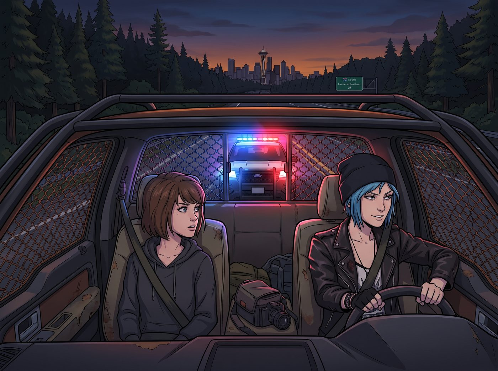
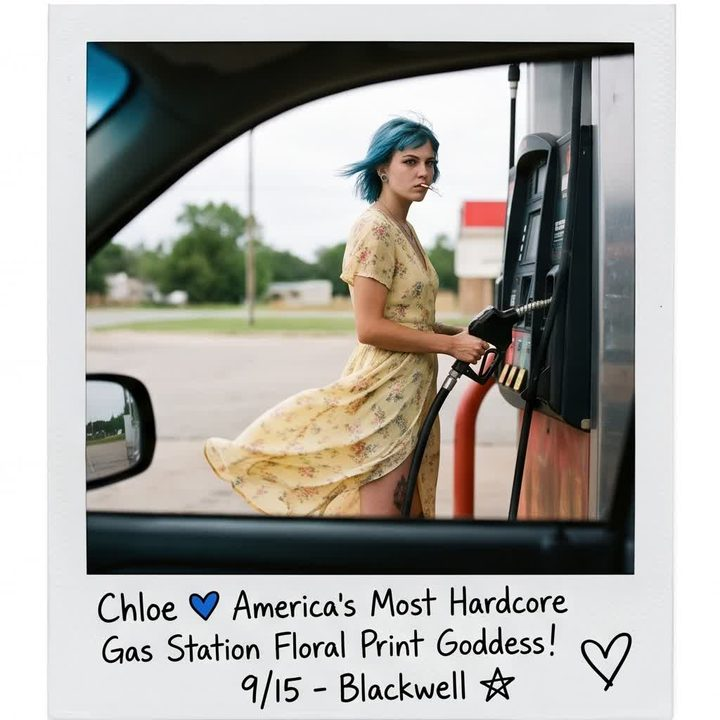
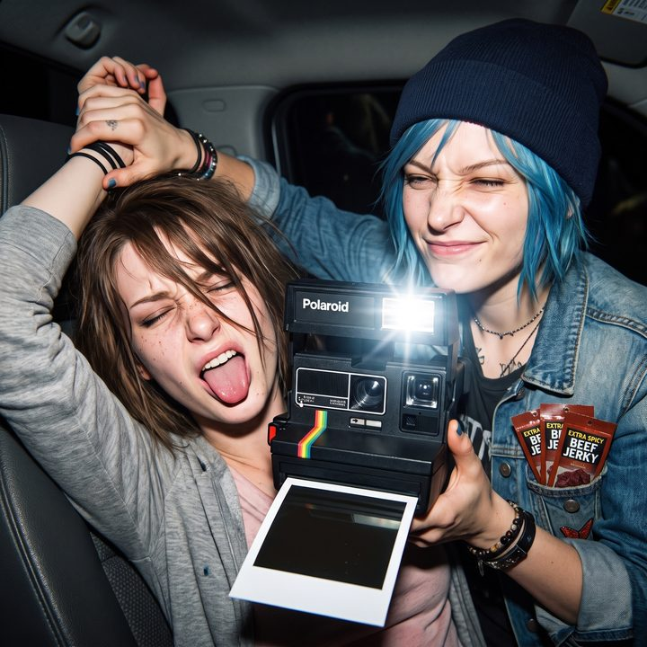

車頂上的黑歷史



把一輛重型皮卡改裝成彷彿隨時要衝進末日戰場的廢土戰車——加裝粗壯的防撞鋼樑、防滾架、甚至在車窗上焊著鐵絲網——這在華盛頓州的公路上，簡直就是在對著公路巡警大喊：「來抓我啊！」
這天傍晚，Chloe 和 Max 剛駛出西雅圖市區不久，後視鏡裡就毫無懸念地亮起了刺眼的紅藍警燈。
一、公路上的攔檢
「該死。」Chloe 煩躁地拍了一下方向盤，把這頭鋼鐵野獸停在路肩。她降下車窗，雙手放在方向盤上，準備用她那套街頭混混的從容來應付警察。而坐在副駕駛的 Max 則緊張得開始捏手指，心裡盤算著這輛車身上那些明顯超出法規標準的改裝零件，等一下究竟會被開出多少張罰單。
一名身材魁梧、神情嚴肅的州警踩著沉重的步伐走上前。面對這樣一輛極度危險的改裝車，他的右手甚至本能地搭在了腰間的槍套上。
「女士，駕照和行照。妳知道妳的防撞鋼樑超出了本州的改裝法規限制嗎？」警察的聲音冷酷且充滿威嚴。他一邊接過 Chloe 遞來的證件，一邊打開強光手電筒，警惕地掃視著車廂內部。
手電筒的光束越過穿著皮夾克、一臉桀驁不馴的 Chloe，越過緊張兮兮的 Max，最終，精準地定格在車頂遮陽板上釘著的兩張寶麗來照片上。
那是她們前幾天為了互相傷害，特地翻出來並釘在車裡公開處刑的阿卡迪亞灣時期黑歷史。
二、致命的視覺認知失調
警察的目光首先落在了左邊那張照片上。照片裡，一個留著藍色短髮的女孩正站在加油站的油泵前。但她沒有穿龐克服裝，而是穿著一件極度輕柔、女性化、甚至帶著點田園風碎花的淡黃色連衣裙。照片裡的女孩微微回眸，雖然嘴裡叼著菸試圖裝酷，但那身裙子讓她看起來就像個被迫參加鄉村舞會的彆扭少女。照片下方還有 Max 娟秀的字跡：「Chloe 全美最硬核的加油站碎花裙女神！」
警察微微皺起眉頭，將手電筒的光線移回駕駛座上這個渾身刺青、眼神兇狠的廢土車手臉上，來回比對了兩秒。
接著，手電筒的光束移向了右邊那張照片。照片裡，平時看起來安靜靦腆的 Max，正被 Chloe 狠狠地夾在腋下鎖喉。Max 為了護住手裡的寶麗來相機，五官完全皺成了一團，舌頭極度狂野地伸在外面，翻著白眼，看起來就像一隻被踩到尾巴的哈士奇。而一旁的 Chloe 則露出惡作劇得逞的邪惡笑容，牛仔外套的口袋裡還極度搶戲地塞滿了三包特辣牛肉乾。
警察再次將光線移回副駕駛座，看著此刻正襟危坐、試圖展現出「我是一個遵紀守法好公民」的乖巧文青 Max。
車廂裡的空氣，在這一刻凝固了。
三、拼命憋笑的執法人員
那種巨大的視覺認知失調，像是一記重拳，狠狠地擊中了這位受過嚴格專業訓練的公路巡警。前一秒，他還以為自己攔下的是什麼極度危險的末日狂徒、重裝毒販；下一秒，他發現車裡坐著的，其實是一個被逼著穿碎花裙的傲嬌太妹，和一個會為了牛肉乾跟人打架、舌頭能伸出兩吋長的笨蛋。
警察的臉部肌肉開始不受控制地瘋狂抽搐。他死死地咬緊牙關，鼻孔微微放大，深吸了一大口華盛頓州傍晚的冷空氣。身為執法人員的尊嚴告訴他，絕對不能在一輛涉嫌非法改裝的車輛旁笑出聲來。他必須把這股笑意硬生生地憋回肚子裡，以至於他的耳根都開始泛紅了。
「咳……嗯。」警察戰術性地清了清嗓子，強行將手電筒的光線從那兩張殺傷力極強的黑歷史照片上移開，低頭看著手裡的駕照。
「Price 小姐。」警察的聲音有些發緊，語速比剛才快了許多，彷彿只想趕快結束這場對他面部神經的酷刑，「妳的駕照沒問題。但妳的防護網和鋼樑必須在兩週內去車管所重新報備。這次我只給妳開一張警告單。」
「好的，長官。我會盡快處理。」Chloe 依然試圖維持著她那酷酷的語氣，但她已經察覺到警察看她的眼神發生了某種詭異的變化。
四、逃離現場的社死
警察將證件和警告單遞回給 Chloe。就在他轉身準備走回巡邏車的時候，他終於還是沒忍住。他停下腳步，微微彎下腰，對著車窗裡的兩人露出了這輩子最扭曲、最努力憋笑的表情。
「順便說一句，Price 小姐，」警察指了指車頂，語氣一本正經，但聲音裡透著明顯的顫抖，「那件碎花連衣裙真的很適合妳。非常……硬核。另外，Caulfield 小姐，少吃點特辣牛肉乾，對舌頭不好。祝妳們晚安。」
說完，警察幾乎是快步逃回了他的巡邏車。坐進車裡的瞬間，Max 甚至能透過警車的擋風玻璃，看到那個魁梧的警察趴在方向盤上，肩膀正在劇烈地抖動。
「……」「……」
廢土皮卡裡，死一般的寂靜。
十秒鐘後。「Maxine Caulfield！！！」Chloe 爆發出了一聲響徹公路的悲憤怒吼，她一把扯下頭頂那張碎花裙照片，「我當初就說過要把這張見鬼的照片燒掉！我街頭霸王的威嚴，我廢土車神的尊嚴，今天全被華盛頓州警給看光了！」
「怪我嗎？！是妳非要把我們倆的黑歷史釘在車頂上互相傷害的！」Max 羞憤欲死地捂住自己的臉，回想起剛才警察看她那個宛如看智障一般的眼神，恨不得立刻發動時空倒轉，「我現在在警察系統裡的備註，肯定已經變成了愛吃牛肉乾的舌頭抽筋怪了！」
這場原本應該充滿了火藥味與緊張感的警察攔檢，最終在兩人的互相指責和極度社會性死亡的崩潰中，踩下油門，灰溜溜地逃離了現場。